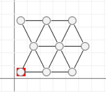
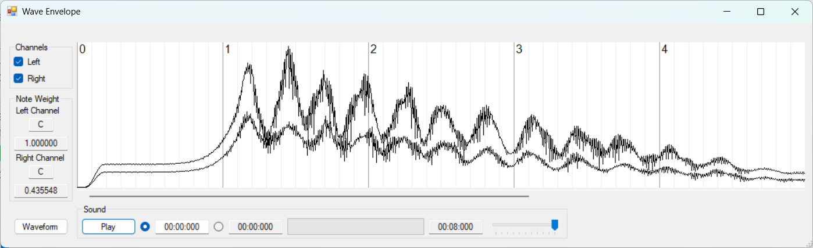

Last Update: 27.02.2025
SoundCAD is a Windows software for composing sounds and music from scratch. It is not modelling the sound itself, but rather the mechanical system creating it. There is no direct manipulation of the sound. Wave filters are taboo. The concept of SoundCAD is best described with a quotation from Brian Eno:
Since I have always preferred making plans to executing them, I have gravitated towards situations and systems that, once set into operation, could create music with little or no intervention on my part. That is to say, I tend towards the roles of the planner and programmer, and then become an audience to the results.
SoundCAD puts you in these roles. This is shown with the model of a small mechanical system.
The model of a mechanical system is created with a few clicks:
This is a hexagonal grid of 3x3 radiobuttons and lines connecting them. In the terms of SoundCAD, these are 3x3 Elements that are connected with Bindings. Each Element, in turn, is a point mass and each Binding is an elastic spring. For the Elements to oscillate, a force is applied to one or more of them. The radiobuttons of the excitated Elements have a red background color. Here only one Element is excitated.
Each Element has a default mass of 0.000524 kg. This is the mass of a sphere with diameter 0.01 m and density 1000.0 kg/m^3. Each Binding has a default spring constant of 4096 N/m. Plastics have similar densities. Given the same load, the length 0.01 m and the default spring constant, the extension of the Bindings equals the extension of a nylon thread with diameter 0.15 mm.
The force maximum is 0.4 N. The force is applied for 0.2 seconds. After 1.0 seconds the kinetic energy of the system begins to dissipate. When the oscillation starts, then the elastic deformations of the Bindings are calculated, scaled and written to a 44.1 kHz stereo wave file. The recording is stopped after 8 seconds.
Having planned and programmed, we now become an audience to the results. These are the first seconds of the wave envelope of the created sound. The left channel has higher amplitudes than the right channel:
This is the created sound:
After one second, the high excitation frequency transforms itself into an oscillation with much larger amplitudes and a significant lower frequency. Due to the energy dissipation, the sound fades away soon and a melody can be played with it. For its usage in a melody, the first second is removed and the sound is transformed to different pitches. Then the first bars of Ravel's Pavane pour une infante défunte can be played with it:
Even though it is astonishing that 9 point masses create this sound, becoming an audience to the result goes beyond a sheer surprise. It means giving the sound the time to develop itself and maintaining it as long as it stays interesting. This approach is illustrated by the follwing sound examples that are created from a variety of mechanical systems with up to 144 Elements. Having created the system and started the recording, there has been no interaction or post-processing whatsoever.
The first sound is created from an instable mechanical system. Due to a lack of Bindings, it is possible to rotate Elements relative to each other without changing the length of any Binding. It takes about 7 seconds before the almost inaudible excitation frequency triggers a much louder and lower oscillation. All other mechanical systems are stable.
SoundCAD is technical software for musical purposes. It communicates with 44.1 kHz stereo wave files and - with the exception of the note frequencies - does not support the MIDI standard.
Depending on your feedback, I will turn this landing page into a website and eventually distribute the software in some way. For feedback and further information please contact:
Andreas Klein
Sedanplatz 1
65183 Wiesbaden
Germany
andreasmichael.klein@web.de